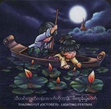

Festivals
- Horsemanship
- Htamaneipwe
- Sand Pagodas
- Thingyan
- Kason Nyaungyaltwinpwe
- Sar Pyan Pwe
- Wa So Pwe
- Sar Yale Tan Mal Pwe
- Hlay Pyaing pwe
- Mee Tun Pwe
- Ka Htain Pwe
- Sarsodaw
Months
- January
- February
- March
- April
- May
- June
- July
- August
- September
- October
- November
- December
|
Thadingyut (October)

Thadingyut is the seventh Myanmar month (in September-October) towards the end of the rainy season.
Lord Gautama Buddha preached The Abhidhamma to Maidawmi Nat (reincarnate of His Mother) in Tavatimsa Abode of celestial beings for three Lenten moths and returned to the abode of men on the Full-moon day of Thadingyut. The king of Celestials created gold, silver, ruby stairways for him. Buddha took the middle ruby one radiating six hues of aura. The nats came along by the right gold stairways and the brahmas by the left silver stairways.
On account of that, Myanmar Buddhists celebrate the full-moon day with multi-coloured illuminations. It is also called Tavatimsa Festival after the Tavatimsa Abode of the nats and the Myinmo Lights festival after the Mount Myinmo there.
For the Sangha it is the time for what is known as Pawayana, which means inviting, entreating, urging. In practice since the times of Buddha, it is to beg on another for forgiveness of any action that might have displeased any other among Sangha. There is also the practice among laity of paying obeisance to parents and elders.
|